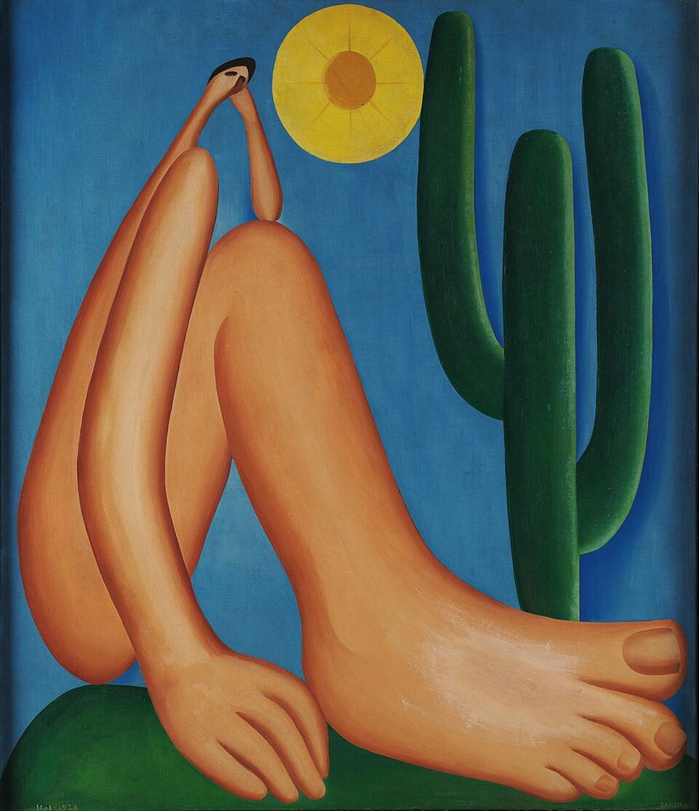

Abaporu
Tarsila do Amaral · 1928 · Oil on canvas · 85 × 73 cm · Museo de Arte Latinoamericano de Buenos Aires (MALBA)
In copyright. Look and learn: shown for study, not for download.
Tarsila do Amaral painted this in January 1928 as a birthday gift for her husband at the time, the writer Oswald de Andrade. He and the poet Raul Bopp gave the picture its name, which comes from Tupi words meaning the man that eats people. After her death in 1973 it passed through a gallery and two collectors, and in 1995 the Argentine collector Eduardo Costantini paid $1.4 million for it at auction.